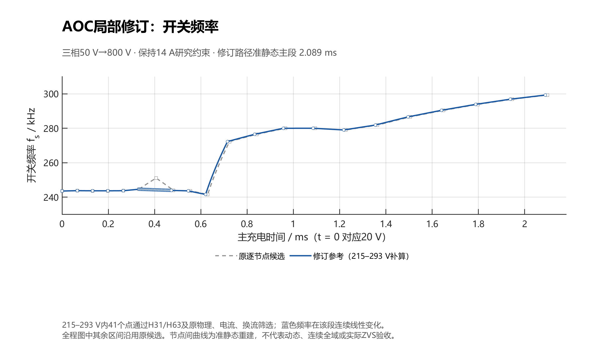
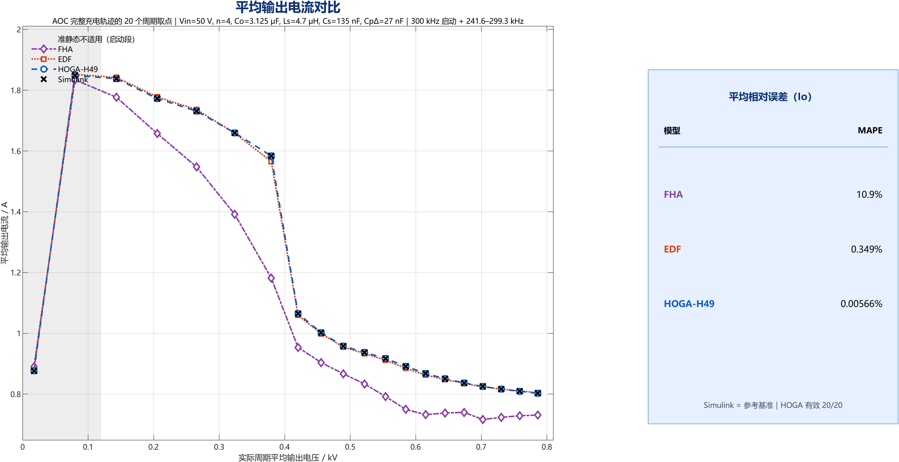

三相 LCC 电容充电电源 — AOC 策略资料包（最终版）
50 V → 800 V 三相 Δ/Y LCC 谐振电容充电电源的 AOC（adaptive optimization charging，自适应优化充电）策略梳理。本仓库只保留最终版：文献层为 Qin 等 2023 年 IEEE JESTPE 论文的 AOC 方法；项目层为 2026-10-20 定稿、2026-10-24 完成 20 点验证的 59 节点 AOC 频率轨迹。旧 21 节点 280–299 kHz 表、10 点验证版、20 段实施表均明确标注为历史/中间版本，不与最终版混用。
本仓库是写作资料包，不是硬件实验报告，也不是完整项目镜像。所有“已验证/未验证”的边界见docs/05_claims_and_boundaries.md。原论文 PDF 受 IEEE 版权限制，不随仓库分发；题录、DOI 与逐节阅读摘要见docs/01_paper_AOC_digest.md。
30 秒结论
| 问题 | 结论 |
|---|---|
| 文献中的 AOC 是什么？ | 在谐振电流上限、ZVS 边界、频率上下限约束下，随输出电压实时求最大可行输出电流参考，再经电流 PI 实施；单相 2174 W 样机、45→720 V、8.13 mF、105 A，1.82 s→1.62 s（速度提高 12.35%） |
| 本项目的“AOC”是什么？ | 借鉴 AOC 目标的离线查表轨迹：三相 HOGA 逐电压点搜索最大平均整流电流，生成 59 节点 fs(Vo) 表；开环频率前馈 + 连续相位 + 800 V 锁存，没有在线电流 PI |
| 最终轨迹的关键数 | 59 节点，20–800 V，241.5905–299.2573 kHz；0–20 V 用 300 kHz 启动；相峰值 ≤ 13.99995 A（14 A 研究情景）；换流电流代理最小 1.43999 A（阈值 1.40019 A） |
| 充电时间 | 准静态 20→800 V 2.089438 ms；理想开关+二极管压降动态 t800 = 2.153487 ms；同模型旧 21 节点表 2.596206 ms（−17.05%） |
| 模型精度 | 20 点全部有效：HOGA-H49 的 Io MAPE 0.00566%、RMS 0.00391%、峰值 0.0270%、NRMSE 0.0307% |
| 最强证据到哪 | 冻结 Vo 的 Simulink 理想开关参考 + 20 点 HOGA 验证；没有硬件实验；器件近似模型（100 ns、Coss、Cj）下最终 59 节点表尚未跑全程 |
| 能否写“实现了 AOC”？ | 不能。应写“借鉴 AOC 的约束优化目标，构造离线选频轨迹”；原论文的在线电流闭环未实现 |
关键图
| 最终 59 节点轨迹的开关频率（准静态重建） | 20 点平均输出电流精度 |
|---|---|
 |
 |
左图：20→800 V、2.089 ms 准静态轨迹；371 V 取全表最低 241.59 kHz，410 V 分支跳变到 272.27 kHz。右图：冻结Vo的 Simulink 理想开关参考，HOGA-H49 的IoMAPE 0.00566%。两图都不是开关级动态波形，也不是硬件数据。
快速入口
| 入口 | 适合 |
|---|---|
| 一页式总览 ONE_PAGE.md | 一次看懂文献 + 项目 + 可写/不可写 |
| 文献精读 | Qin 2023 的问题、CRC-FHA、三条边界、三阶段控制、实验与局限 |
| 公式与符号 | 论文式 (2)(11)–(20) 的转写、适用域与不可移植项 |
| 最终 AOC 轨迹 | 59 节点表怎么来、约束是什么、结果多少 |
| 验证与证据等级 | 20 点验证、模型层级、哪些数能放在一张表 |
| 可写与不可写 | 逐条 claim–evidence 对照、禁用表述 |
| 写作指南 | §4.1.3 / 绪论段的段落骨架、图表建议、GPT 提示词 |
| 来源索引 | 每个数字的出处、版本关系、未随包文件 |
网页版（GitHub Pages）：https://sososoamazing.github.io/lcc-aoc-charging-strategy/
研究对象（本项目）
Vin 50 V → 三相三桥臂（120°）→ 每相 Ls 4.7 μH / Cs 135 nF
→ Δ 接 Cp 27 nF/边 + 三台 1:4 变压器（一次 Δ / 二次 Y 浮空）
→ 共用六二极管桥 → Co 6.25 μF × 2 串联 = 3.125 μF → Vo 0–800 V（1 J）| 量 | 值 |
|---|---|
Vin |
50 V |
Ls / Cs |
4.7 μH / 135 nF（每馈线） |
Cp（Δ 每边） |
27 nF |
n = Ns/Np |
4 |
Co |
3.125 μF |
| 目标电压 | 800 V |
| 储能增量 | 1 J |
| 研究电流上限 | 14 A（相电流峰值，情景假设，不是器件额定） |
| 研究频率窗口 | 210–340 kHz（搜索）；最终表 241.59–299.26 kHz |
仓库结构
.
├─ ONE_PAGE.md # 一页式总览（LLM 友好）
├─ index.html # GitHub Pages 单页（由 ONE_PAGE 生成）
├─ llms.txt # 给 LLM/爬虫的 URL 索引
├─ docs/
│ ├─ 00_overview.md # 范围、版本政策、时间线
│ ├─ 01_paper_AOC_digest.md # 文献精读
│ ├─ 02_equations.md # 公式、符号、适用域
│ ├─ 03_project_AOC_final.md # 最终 59 节点轨迹
│ ├─ 04_validation.md # 验证、模型层级、精度
│ ├─ 05_claims_and_boundaries.md
│ ├─ 06_writing_guide.md # 论文写作骨架 + GPT 提示词
│ └─ 07_sources.md # 来源、哈希、版本关系
├─ data/
│ ├─ aoc_59_nodes.csv # 最终频率表（59 节点，含 Io/Ipk/Icomm）
│ ├─ aoc_20point_accuracy.csv # 20 点逐点精度
│ ├─ aoc_20point_summary.csv # MAPE/MAE 汇总
│ ├─ aoc_20point_points.csv # 20 点工况
│ └─ model_layer_metrics.csv # 各模型层的关键数（本包整理）
├─ figures/ # 项目自生成图（非论文原图）
├─ tools/ # 站点构建 + 包校验
├─ SHA256SUMS.txt
├─ CITATION.cff
├─ LICENSE # 代码 MIT
└─ LICENSE_DOCS.md # 原创文档/图 CC BY 4.0给 ChatGPT 网页端的使用方法
最短路径
把下面两个 URL 直接贴给 GPT（需开启联网/浏览）：
- 一页式总览（raw）：
https://raw.githubusercontent.com/sososoamazing/lcc-aoc-charging-strategy/main/ONE_PAGE.md
- 写作指南（raw）：
https://raw.githubusercontent.com/sososoamazing/lcc-aoc-charging-strategy/main/docs/06_writing_guide.md
如果 GPT 打不开 raw 链接，给它 GitHub Pages： https://sososoamazing.github.io/lcc-aoc-charging-strategy/
推荐提示词
你是电力电子方向的论文写作助手。请先读取以下资料：
https://raw.githubusercontent.com/sososoamazing/lcc-aoc-charging-strategy/main/ONE_PAGE.md
https://raw.githubusercontent.com/sososoamazing/lcc-aoc-charging-strategy/main/docs/06_writing_guide.md
任务：为我的硕士学位论文撰写“三相 LCC 电容充电电源的 AOC 型选频轨迹”一节（约 2500–3500 字）。
硬性要求：
1. 区分“文献的 AOC（在线电流闭环）”与“本文的 AOC 型离线查表轨迹”，不得声称实现了原论文的在线电流 PI；
2. 只使用资料中标注为“最终版”的 59 节点轨迹与 2.153487 ms / 2.089438 ms 数据；
3. 不得把器件近似模型（100 ns、Coss、Cj）下的 2.572428 ms、12.509%、3.180% 与最终 59 节点数据混在同一张表；
4. 不得声称硬件 ZVS、全局最优、整机效率提升或三相速度提升百分比；
5. 每个数值后标注模型层级（准静态 / 理想开关动态 / 器件近似 / 文献实验）。
先输出三级提纲和“拟用数值清单”，我确认后再写正文。更细的段落骨架、图表建议与“禁用句式”见 docs/06_writing_guide.md。
版本政策（为什么只留这些）
| 内容 | 最终版 | 历史/中间版 | 处理 |
|---|---|---|---|
| 文献汇报 | release-final 7 页稿（v6）+ 逐页讲稿 + 导师问答 |
v1–v5、release/ 旧包 |
只保留文字摘要，不上传 PPT 历史版本 |
| AOC 轨迹 | 59 节点 aoc_smooth254_59_nodes.csv |
21 节点 280–299 kHz 表；20 段实施表；10 点验证 | 最终表进 data/；历史表只在版本表与对照中说明 |
| 轨迹验证 | 20 点 HOGA-H49 验证（2026-10-24） | 10 点 v1 | 只用 20 点 |
| 充电时间 | 准静态 2.089438 ms；动态 2.153487 ms | 2.572428 ms（21 节点 + 器件模型） | 分模型层级并列，不混算 |
| 论文草稿 | 2026-10-19 合排稿 §4.1.3 为 21 节点旧文 | — | 本包给出改写骨架，不直接改 docx |
“历史版”不等于“错误版”。它们在自己的模型/口径内仍是可复核记录；只是不是最终 AOC 轨迹，不能拿来当最终结果。
边界（必读）
- 文献 AOC 是单相、在线闭环、有 2174 W 实验；本项目是三相、离线查表、只有仿真。两者不能互相背书。
- 14 A 是研究情景，不是 MOSFET 额定、磁件饱和或热限额；最终表相峰值 13.99995 A 只是“贴着情景线”，不是“通过硬件安全认证”。
- 换流电流代理 1.40019 A 是 100 ns 命令死区 + RC 门极近似下的电荷筛选下限，不是 ZVS 认证。
- HOGA 主方程是零物理死区、0.6 V 整流简化基准；Coss/Cj 动态只在器件近似模型中另算。
- 器件近似模型下，旧 21 节点轨迹三条均超 14 A、启动各有 4 次残压失败；800 V 末端 7 个离散频点没有同时满足 14 A 与残压。最终 59 节点表尚未在该模型下跑全程。
- 没有硬件、损耗/温升、闭环充电、参数鲁棒性、磁件验证；不能写“效率提升”“温升降低”“全程 ZVS”。
完整清单见 docs/05_claims_and_boundaries.md。
引用
@misc{LCC3AOC2026,
title = {Three-Phase LCC Capacitor Charger: AOC Strategy Dossier (Final Version)},
year = {2026},
note = {GitHub repository},
url = {https://github.com/sososoamazing/lcc-aoc-charging-strategy}
}文献引用：
@article{Qin2023AOC,
author = {Qin, Mengjie and Chen, Wenjie and Ye, Aizhen and Zhang, Fan and Goetz, Stephan M. and Yang, Fengtao and Yu, Zheyuan and Yang, Xu},
title = {Adaptive Optimization Charging Strategy for {LCC} Resonant Capacitor Charging Power Supply},
journal = {IEEE Journal of Emerging and Selected Topics in Power Electronics},
year = {2023},
volume = {11},
number = {6},
pages = {5675--5689},
doi = {10.1109/JESTPE.2023.3301738}
}许可
- 代码/脚本：MIT，见
LICENSE。 - 本仓库原创文档、整理表、项目自生成图：CC BY 4.0，见
LICENSE_DOCS.md。 - 原论文：版权归 IEEE/作者，未随仓库分发；引用请用 DOI。
- 原项目内部报告/数据：按原项目约定；本仓库只做公开归档，不改变原作者权利。
相关仓库
- HOGA 建模与 344 点扫描、AOC 20 点验证的完整归档：
https://github.com/sososoamazing/three-phase-lcc-hoga
- 本仓库聚焦 AOC 策略本身（文献 + 最终轨迹 + 写作材料），不重复 HOGA 方法细节。